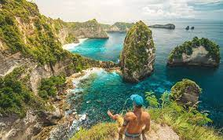
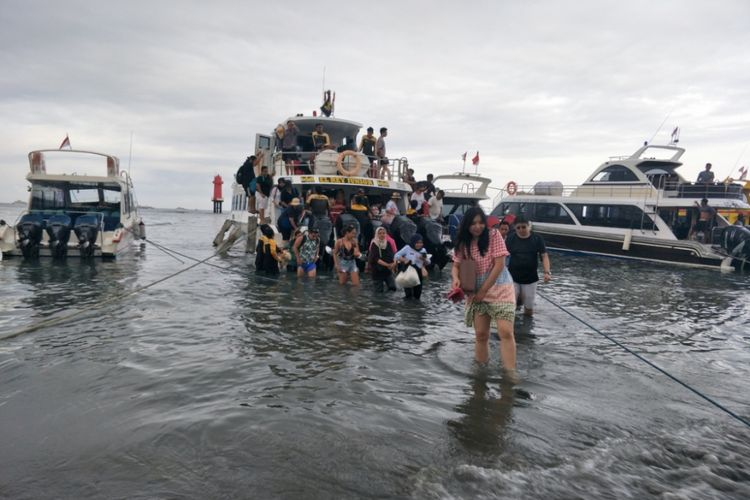
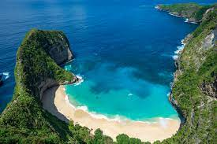
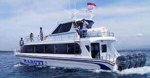

Nusa Penida
Nusa Penida adalah sebuah pulau (=nusa) bagian dari negara Republik Indonesia yang terletak di sebelah tenggara Bali yang dipisahkan oleh Selat Badung. Di dekat pulau ini terdapat juga pulau-pulau kecil lainnya yaitu Nusa Ceningan dan Nusa Lembongan. Perairan pulau Nusa Penida terkenal dengan kawasan selamnya di antaranya terdapat di Crystal Bay, Manta Point, Batu Meling, Batu Lumbung, Batu Abah, Toyapakeh dan Malibu Point.
Kondisi Geografis Nusa Penida Perbukitan dan kapur karang merupakan kondisi tanah di pulau ini, salah satunya gunung bukit tertinggi bernama Gunung Mundi yang terletak di Kecamatan Nusa Penida. Sumber air adalah mata air dan sungai hanya terdapat di wilayah daratan Kabupaten Klungkung yang mengalir sepanjang tahun. Desa-desa pesisir nusa penida di sepanjang pantai bagian utara berupa lahan datar dengan kemiringan 0 – 3 % dari ketinggian lahan 0-268 m dpl. Sedangkan di Kecamatan Nusa Penida sama sekali tidak ada sungai. Sumber air di Kecamatan Nusa Penida adalah mata air dan air hujan yang ditampung dalam cubang oleh penduduk setempat. Kabupaten Klungkung termasuk beriklim tropis. Bulan-bulan basah dan bulan-bulan kering antara Kecamatan Nusa Penida dan Kabupaten Klungkung daratan sangat berbeda. Infrastruktur wisata dan pengembangan akses ke lokasi destinasi wisata sudah mulai tumbuh di Bali 3 nusa ini. Keramahan lokal akan anda temui di setiap sudut Bali 3 nusa ini yang memiliki populasi 46.749 jiwa (8.543 KK) pada sensus 2010, meliputi 202,8 km2 yang sudah mulai banyak mengalami perubahan sejak 10 tahun belakangan ini. Secara administratif, kecamatan di Kabupaten Klungkung ini terdiri dari 4 kecamatan besar (Kecamatan Klungkung, Kecamatan Banjarangkan, Kecamatan Dawan dan Kecamatan Nusa Penida). Kecamatan Nusa Penida terdiri dari tiga kepulauan yaitu Pulau Nusa Penida, Pulau Lembongan dan Pulau Ceningan, dan terdiri dari 16 Desa Dinas. Pulau Nusa Penida bisa ditempuh dari empat lokasi dermaga.
Pelabuhan Nusa Penida
Sekurangnya yang diketahui ada 6 dermaga/pelabuhan berbeda-beda untuk setiap perusahaan kapal cepat dari Sanur menuju Nusa Penida berlabuh. Pelabuhan di Nusa Penida tersebut di antaranya adalah: Pelabuhan Toya Pakeh Pelabuhan Buyuk Pelabuhan Br. Nyuh Pelabuhan Mentigi Pelabuhan Sampalan (Ferry) Pelabuhan Lembongan
Tempat Wisata di Nusa Penida

Destinasi Wisata Nusa Penida Menurut Wilayah Pusat destinasi wisata di Pulau Nusa Penida ini berada di Nusa Penida bagian barat seperti Pantai Klingking dan Pantai Broken yang terkenal itu. Demikian di bawah ini saya jabarkan destinasi wisata yang ada di Nusa Penida. Sebelah Selatan Pulau Nusa Penida Tebing Banah Pantai Tembeling dan Hutan Tropis Air Terjun Segening Mata Air Peguyangan Sebelah Barat Pulau Nusa Penida Pantai Kelingking Pantai Broken - Pasih Uug Angel Billabong Pohon Cinta Paluang Cliff Pantai Kelingking Tebing Palungan Pantai Crystal Bay Sebelah Timur Pulau Nusa Penida Pantai Atuh Pantai Diamond Pulau Seribu / Raja Lima Rumah Pohon Molenteng Pantai Suwehan Bukit Teletubbies Nusa Penida Goa Giri Putri dan Vihara Dewi Kwan Im
Transportasi

Transportasi Laut Di Pulau Bali tersedia banyak kapal cepat menuju Nusa Penida. Kapal cepat tersedia di hampir setiap pelabuhan di Bali, seperti Pelabuhan Serangan, Pelabuhan Sanur dan Pelabuhan Padangbai mulai dari jam 7 pagi hingga sore hari jam 5, begitu pun dengan jadwal sebaliknya. Operator Fast Boat Nusa Penida Kapal tradisional dengan harga yang relatif murah berangkat setiap hari pada pukul 6 pagi di dekat jembatan gantung antara Nusa Lembongan dan Nusa Ceningan. Perahu ini menjadi transportasi yang banyak digunakan oleh penduduk setempat maupun para wisatawan dan sering kali sangat ramai. Transportasi Darat Nusa Penida juga menyediakan transportasi darat untuk mobilitas ekonomi penduduk maupun wisatawan. Seperti sewa motor dan sewa mobil dapat dengan mudah ditemui pada setiap dermaga pelabuhan yang ada di Nusa Penida. Akses jalan di Nusa Penida belum teraspal semua dan belum sebaik di Pulau Bali, pembangunan akses jalan masih dalam pembenahan dan proses lebih baik kedepannya.